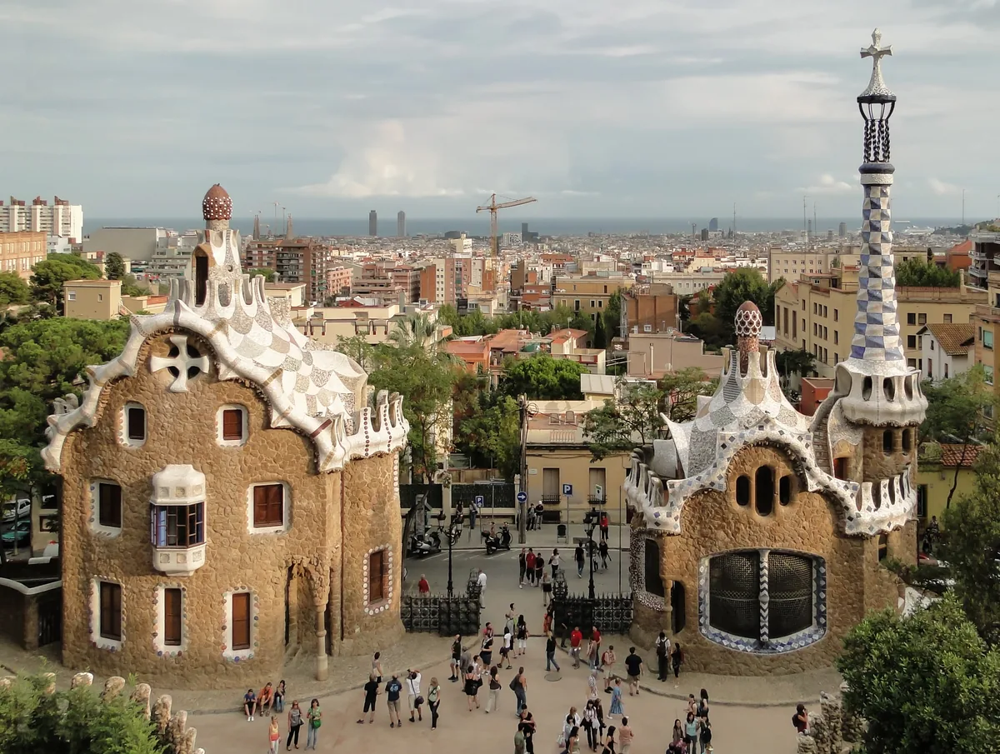
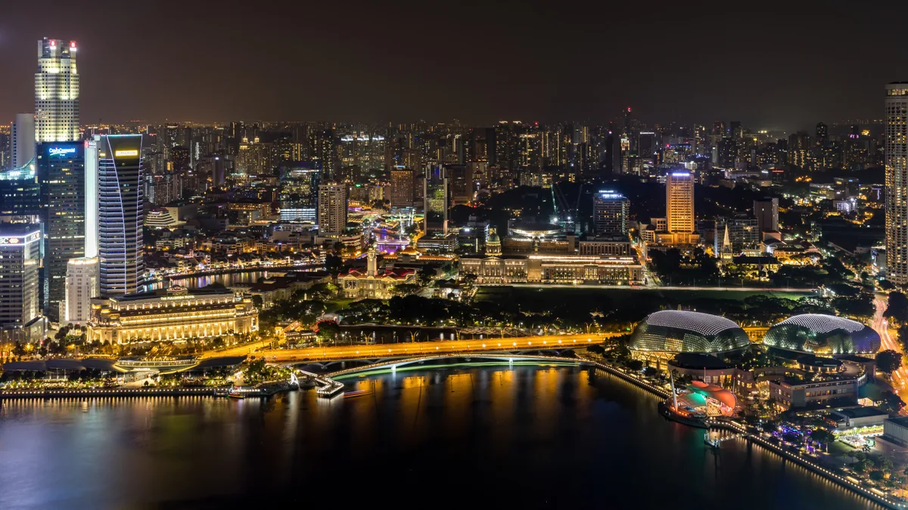
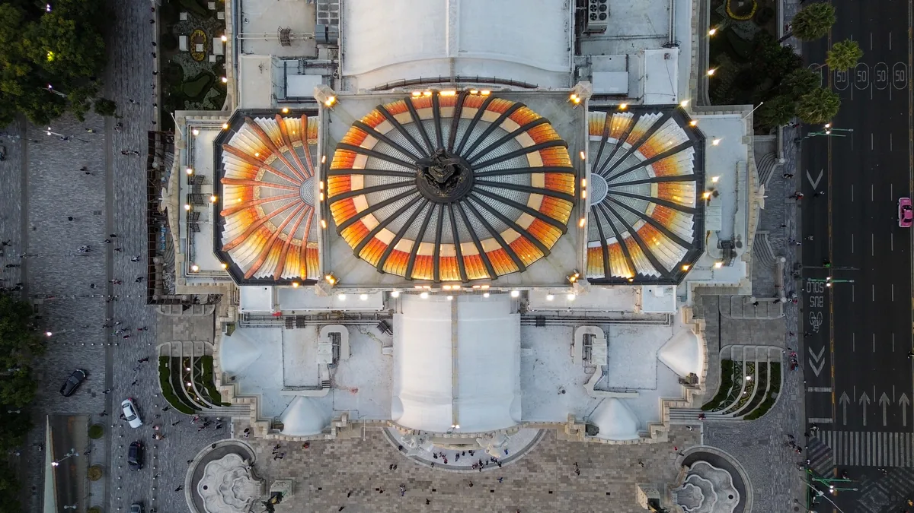

GOEKSPLO · WORLDWIDE BATCH 1 · FINAL OWNER REVIEW
Four reviewed guides. Three photo decisions.
Local preparation only — nothing newly approved or published. The four English v3 drafts and every photo/crop/derivative pin are unchanged. Barcelona now prefills BCN. Mexico City’s credit is visible in the actual shared hero and card layouts.
Original independent review · Updated shared cards · Implementation and verification
| Istanbul | English v3 · unchanged | Shared guide preview · Exact copy | Approved image unchanged |
|---|---|---|---|
| Barcelona | English v3 · unchanged | Shared guide preview · Exact copy | Image approval pending |
| Singapore | English v3 · unchanged | Shared guide preview · Exact copy | Image approval pending |
| Mexico City | English v3 · unchanged | Shared guide preview · Exact copy | Image approval pending |
Istanbul’s existing approved photograph, source, crop and credit remain unchanged; no new media approval is requested for it. The other three photographs below remain pending.
UNAPPROVED CANDIDATE · commons:9050140
Barcelona

Bernard Gagnon / Wikimedia Commons / CC BY-SA 3.0 · resized to WebP; cropped for display · Source photograph · CC BY-SA 3.0

The wide hero omits the top of the right spire; the mobile/card views retain more architecture. Historical image, not evidence of current works.
Bernard Gagnon · photographed 2009-09-20 · object position 50% 62%. 640px WebP · 1200px WebP · 1920px WebP.


Identity, licence obligations and exact pins
The entrance pavilions at Park Güell, Barcelona, Spain. The individual file description, camera location and visible buildings agree. This is a 2009 photograph, not evidence of current works or access.
Preserve photographer/source credit, link the licence, state resizing/cropping, and distribute modified image files under the selected CC BY-SA licence. No generative edits, retouching or composite views. All original and derivative hashes remain unchanged.
Original SHA-256: 1095ef8d9c362ba5adfd0952966f4a3395e559ff35ea020a22b672d9953eb6eb
Exact pending photo/crop/derivative proposal · Individual file-page metadata and revision
UNAPPROVED CANDIDATE · commons:88145804
Singapore

Basile Morin / Wikimedia Commons / CC BY-SA 4.0 · resized to WebP; cropped for display · Source photograph · CC BY-SA 4.0

View from Marina Bay Sands towards the CBD/Civic District, not a photograph of Marina Bay Sands itself.
Basile Morin · photographed 2018-06-10 · object position 53% 58%. 640px WebP · 1200px WebP · 1920px WebP.


Identity, licence obligations and exact pins
The Singapore CBD/Civic District waterfront viewed from the Marina Bay Sands observation deck, not a photograph depicting Marina Bay Sands itself. Fullerton, the waterfront and Esplanade agree with the file description.
Preserve photographer/source credit, link the licence, state resizing/cropping, and distribute modified image files under the selected CC BY-SA licence. No generative edits, retouching or composite views. All original and derivative hashes remain unchanged.
Original SHA-256: 56291984d3d66d5abc78ec321fbc9a2a8736e8944a5b689c1cb2fb1269106ef0
Exact pending photo/crop/derivative proposal · Individual file-page metadata and revision
UNAPPROVED CANDIDATE · commons:139259979
Mexico City

© ProtoplasmaKid / Wikimedia Commons / CC BY-SA 4.0 · resized to WebP; cropped for display · Source photograph · CC BY-SA 4.0

Overhead view of Bellas Artes in Mexico City. The actual updated shared guide and card now show the photographer credit without opening a disclosure.
ProtoplasmaKid · photographed 2023-10-12 · object position 50% 44%. 640px WebP · 1200px WebP · 1920px WebP.


Identity, licence obligations and exact pins
The Palacio de Bellas Artes in Mexico City’s Centro Histórico. The individual file description, coordinates and distinctive domes agree; this is not another similarly named building.
Preserve photographer/source credit, link the licence, state resizing/cropping, and distribute modified image files under the selected CC BY-SA licence. No generative edits, retouching or composite views. All original and derivative hashes remain unchanged.
Original SHA-256: 3f2bb9abfe4aab7e1afd51566d8c8bd80ea192286f5f45f19bad113d954cb7ec
Exact pending photo/crop/derivative proposal · Individual file-page metadata and revision
Exact owner approval
Read each guide and review the crops above. If accepted, use this wording:
I approve the pinned Istanbul, Barcelona, Singapore and Mexico City English v3 drafts in worldwide-batch1-final-review-v1, preserving the content and evidence from worldwide-batch1-review-v1. I also approve Barcelona commons:9050140, Singapore commons:88145804 and Mexico City commons:139259979, with the shown hero/card crops, responsive variants, attribution, modification notices and CC BY-SA requirements. Record GoEksplo Owner and integrate locally through the existing editorial and media gates. Preserve Istanbul’s existing media approval. Do not commit, push or deploy.
Unchanged content/evidence pins · Photo and responsive-file pins. Reviewers and approval dates remain unset. Time-sensitive visitor notes still need recheck by 6 November 2026 and before publication; other periodic guidance by 21 January 2027.
Editorial/media approval does not authorize a dependency upgrade, deployment or public release. The separately identified Next.js security advisory remains an implementation/release decision in the report.